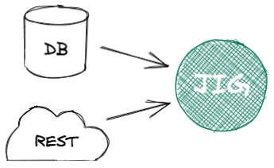

Don't let IT get in the way of business.
Business dashboards, internal tools, and ad-hoc analyses need to be built quickly. Don't lose time in endless meetings. Just open Jig and start developing.

Be free to think outside the box
No-code tools and business intelligence platform lock you in a world of limited possibilities. Jig allows you to compute anything you want, and present it any way you want.
Don't compromise your business safety
Spreadsheets are powerful but often turn into an unmanageable mess. Jig apps are files that can be stored, diffed, audited easily. Also, Jig runs locally, so your data never gets sent to the internet.
